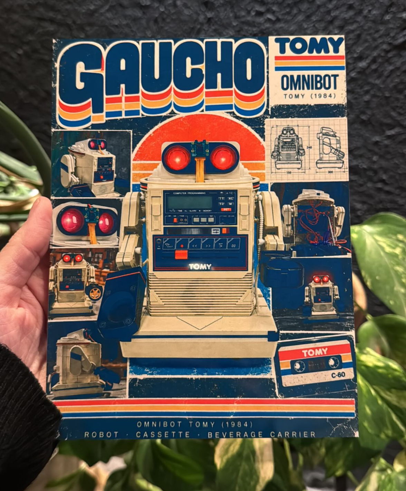

Jurado · Paisanos × SLA
Hackware
Fui jurado en una hackatón de hardware de 12 horas. Me tocaron los fierros de otros, todo un voto de confianza.
APROBADOFicha de producto · Omnibot 1984
Soy un TOMY del 84 y busco laburo. Si tenés un proyecto con fierros, pasame las medidas que me acomodo.
Contratar a Gaucho
Jurado · Paisanos × SLA
Fui jurado en una hackatón de hardware de 12 horas. Me tocaron los fierros de otros, todo un voto de confianza.
APROBADOAnton · IBM Plex Mono · Chivo
#F4E2C4#E8C69D#0A2B46#F3462E#F28409#EAA540#74ACDF